점프스케어 3초 전, 미리 알려드립니다.
화면을 반쯤 가리고, 소리만 듣고, 손가락 사이로 훔쳐보는 대신 — 점프스케어가 오기 3초 전, 조용한 카운트다운으로 미리 알려드립니다. 영화는 그대로, 놀라는 몫만 줄어듭니다.
OTT 화면의 재생 시간을 인식해서, 등록된 점프스케어 구간에 다가가는지 확인해요.
장면 3초 전, 화면 구석에 작은 3-2-1 카운트다운이 조용히 떠요.
놀랄 순간을 알고 보니, 훨씬 편하게 영화에 집중할 수 있어요.